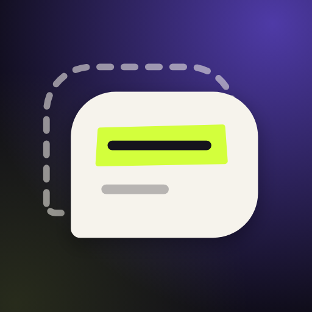

Android app · by Mulhimfy
Read the message they deleted.
Someone sent you a message and took it back before you could read it. Messages Recovery keeps a private copy of each message that reaches your phone, so the words stay even when the sender deletes them.
See deleted messages, with the time they were sent and the time they were taken back.
An alert the moment a message is deleted.
Photos, videos, voice messages and documents that reached your phone can be kept too.
Edited messages: what it said first, and what it was changed to.
Honest about the limit
It starts working from the moment you turn it on. A message deleted before that cannot be brought back, by this or any app.
Private by design
- No internet permission: nothing you receive can leave your phone.
- No ads, no account, no subscription.
- You choose which apps and chats are kept, and you can erase anything at any time.
Help
The app answers the common questions under Settings, "Good to know". Found a problem? Tell us here.